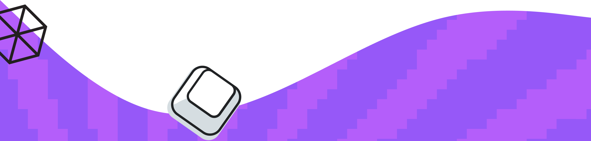
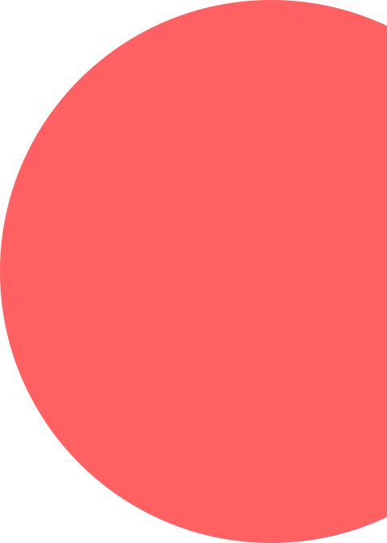
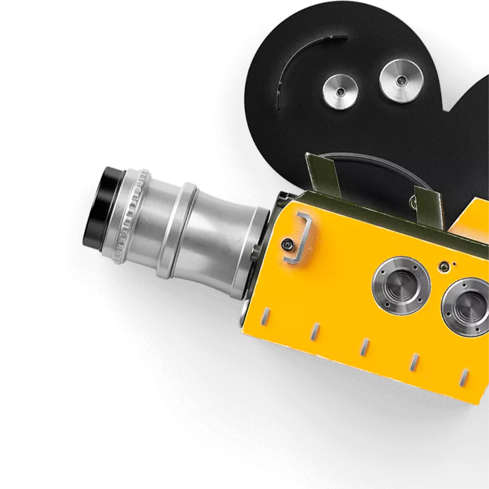

<div class="bottom-wave">
  
</div>




<div class="wrapper" style="
  background-image: url(../../../assets/blue-dots-bg.svg);
  background-color: #00aaff;
  background-repeat: repeat;
">

  <div class="left">
    
  </div>

  <div class="center">
    <div class="addy">
      <div>
        <div class="title-text">
          Ролик из прошлого
        </div>
        <div class="lead-text">
          Если любишь капсулы времени, включай этот
          ролик-послание, который записали твои коллеги
          в 2011 году. Если не любишь, то все равно включай,
          можно подумать у тебя есть выбор.
        </div>
      </div>
      <div class="video-wrapper">
        <iframe src="https://www.youtube.com/embed/8qKsxATUJK0" width="100%" height="100%" frameborder="0"
          webkitallowfullscreen mozallowfullscreen allowfullscreen></iframe>
      </div>
    </div>
  </div>

  <div class="right">
    <div></div>
  </div>
</div>